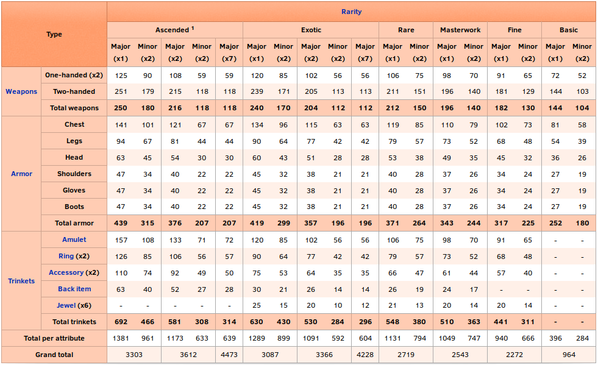

Guild Wars 2 new Player Tutorial
By the community, for the community.

Guild Wars 2 new Player TutorialChapter 0: Basic TerminologyChapter 0.1 Races0.1.1 Norn0.1.2 Charr0.1.3 Asura0.1.4 Sylvari0.1.5 HumansChapter 1: The User InterfaceChapter 2: Movement, Camera and TargetingChapter 2.1 MovementChapter 2.2 Tab TargetingChapter 2.3 Action CamChapter 2.4 OtherChapter 3: Combat3.x: Boons and Conditions3.x: Combofields3.x: Break-bars and Crowd ControlChapter 4: ClassesChapter 4.1: Heavy Armor (Soldier)Chapter 4.2: Medium Armor (Adventurer)Chapter 4.3: Light Armor (Scholar)Chapter 4.3.1: ElementalistChapter 5: Equipment5.1 Attribute Combinations5.2 RaritiesChapter 6: GamemodesChapter 6.1: PvPChapter 6.2: WvWChapter 6.3: PvEChapter 6.3.1 Living World and ExpansionsChapter 7: SocialChapter 7.1: LFGChapter 7.2: GuildsChapter 8: End Game Content8.1 Fractals of the Mist (FotM)8.2 Dungeons8.3 Raids8.4 Fashion Wars8.5 PVP8.6 WvWChapter 9: OtherChapter 9.1: Inventory ManagementChapter 9.2: CraftingChapter 9.3: QuestingChapter 9.4: Chat commandsChapter 9.5: Heart of ThornsChapter 9.6: Path of FireChapter 10: Further Resources
Chapter 0: Basic Terminology
- If numbers are used the base value for level 80 and or the rarity exotic is used. Other level or rarity gear/skills have different numbers.
- CC means Crowd-Control. Generally that refers to skills that in some way restrict the control an enemy has over his character.
-
Chapter 0.1 Races
It is no problem for new players that want to play together to get different races, since the first way point in every starting region is unlocked for every player from the beginning. This enables new players to play with their friends even if they have just free to play accounts.
0.1.1 Norn
The Norn i don't actually know jack shit about besides that they are over sized humans that can transform into animals. Their main city is Hoelbrak, which they built after they were forced out of the north by the elder dragon Jormag.
0.1.2 Charr
The Charr are a feline race native to Tyria. 250 years ago they fought war against the humans to reclaim territories taken from them by the humans. Their main city in the game is the black citadel, built on the ruins of the old human kingdom of Ascalon.
0.1.3 Asura
The Asura are one of the older races. Though not native to the surface they were forced out of the underground by the elder dragon Primordus. They are best known for their intelligence, technological advantages and their inflated ego. Their main city is Rata Sum, built after they had to escape the underground.
0.1.4 Sylvari
The Sylvari are the youngest race of the planet, only having come to live ~25 years before the events of Guild Wars 2. Their main city is the Grove, where they all awaken from the dream to come into this world.
0.1.5 Humans
Humans are the only non-native race on the planet that the player can choose. While a thriving force on Tyria in the older times, they are only a shadow of their former glory and influence. Their capital City is Divinity's Reach, one of the last major human cities.
Chapter 1: The User Interface
Top left
Top right
map
chat
menus
center
- how to swap skills
- show/hide cooldowns etc
mentioning mods like ICM/ARCdps/TaCo ?
Chapter 2: Movement, Camera and Targeting
Chapter 2.1 Movement
Chapter 2.2 Tab Targeting
Chapter 2.3 Action Cam
Chapter 2.4 Other
Chapter 3: Combat
- basics
- levelcap for maps
- dodging
- combofields
- conditions
- weak trinity
3.x: Boons and Conditions
Most status effects in the game come in the way of boons or conditions. Boons is the term for positive effects, Condition for negative. They can either stack intensity, meaning that when the same is applied again the effect gets stronger, or they can stack duration, meaning when the same is applied the time is increased.
Boons:
- Regeneration: Regenerate health over timer, stacks duration
- Stability: While you have stability you can't be hard CCed, stacks intensity
- Might: Gain Power and Condition-damage, stacks intensity
- Fury: 20% critical hit chance, stacks duration
- Aegis: block the next attack, stacks duration
- Resistance: be unaffected by conditions, stacks duration
- Alacrity: reduces the skill recharge time by 33%, stacks duration
- Swiftness: move 33% faster, stacks duration
- Quickness: execute skills 33% faster, stacks duration
Conditions:
Damaging Conditions, stacking Intensity
- Burn: damage
- Poison: damage and reduce received healing
- Confusion: damage and extra damage on skill activation
- Torment: damage and extra damage while moving
- Bleeding: damage
Crowd Control Conditions, stacking duration
See the chapter over Crowd Control
- Chill
- Weakness
- Blind
- Cripple
- Fear
- Immobilize
3.x: Combofields
There are different Types of Fields and Finishers. When a Finisher is activated inside a Combofield a special Interaction happens depending on the Type of Field and Finisher.
- Blasts have an AoE effect
- Leaps only affect yourself
- Projectiles gain an additional effect, usually applying a boon or condition
- Whirls create projectiles with the additional effect
| Field | Blast Finisher (AoE) | Leap Finisher | Projectile Finisher | Whirl Finisher |
|---|---|---|---|---|
| Dark | blind enemies (AoE) | blind enemies | Steal life | Lifestealing Projectiles |
| Ethereal | Chaos Aura (AoE) | Chaos Aura | Confusion | Confusion Projectiles |
| Fire | Might (AoE) | Fire Aura | Burning | Burning Projectiles |
| Ice | Frost Aura(AoE) | Frost Aura | Chilled | Chilling Projectiles |
| Light | Clean Condition(AoE) | Light Aura | Remove Condition | Cleansing Projectiles |
| Lightning | Swiftness (AoE) | Daze | Vulnerability | Vulnerability Projectiles |
| Poison | Weakness (AoE) | Weakness | Poision | Poisoning Projectiles |
| Smoke | Invisibility (AoE) | Invisibility | Blindness | Blinding Projectiles |
| Water | Healing (AoE) | Healing | Regeneration | Healing Projectiles |
3.x: Break-bars and Crowd Control
When playing the game you will sometimes encounter enemies that have a blue bar below their healhbar. This indicates that the champion can not be stunned instantly. It is needed to reduce that bar to 0%, at wich point it slowly regenerates.
To remove the bar players need to use Crowd-Control abilities (alias CC). There are different types of CC and you can see if a skill inflicts CC by reading the description.
Hard CC:
Hard CCs do more damage to breakbars, but can be avoided with stability. If the target possesss stability 1 stack of it gets remove instead of the effect of the CC activating.
- Stuns: the target is unable to move or use skills
- Daze: the target is able to move but unable to use skills
- Float: another form of stun
- Knockdown: another form of stun
- Push/Pull: the target is moved from its current position and unable to use skills/move on its own
- Fear: the target runs away from you unable to move on their own or use skills
Soft CC:
Soft CCs do less damage to break-bars and are not as severe as hard CCs, however they can not be countered by stability but instead are countered by resistance.
Note: Fear is special in the sense that it gets countered by stability as well as resistance and aegis.
- Chill: the targets movement speed and skill recharge speed are reduced by 66%
- Cripple: the targets movement speed is reduced by 50%
- Immobilize: the target is unable to move but can execute skills
- Weakness: reduces the targets endurance regeneration and a 50% chance that hits are glancing blows, dealing 50% less damage
- Blindness: the next attack misses
Chapter 4: Classes
Chapter 4.1: Heavy Armor (Soldier)
Soldier classes have the highest base armor in the game, coming in at 1211 armor.
Chapter 4.2: Medium Armor (Adventurer)
Adventurer classes have the middle amount of armor, coming in at 1064 armor.
Chapter 4.3: Light Armor (Scholar)
Scholar classes have the least armor in the game, coming in at 920 armor.
Chapter 4.3.1: Elementalist
- core
- tempest
- weaver
...
Chapter 5: Equipment
5.1 Attribute Combinations
Equipment differentiates in the bonuses it provides. Generally any armor/weapon has either 3 or 4 attributes.that it gives. On lower level equipment it is however normal to only get one or two stats from it. One exclusion from that is the divine attribute combination, which provides 7 attributes. Depending on the rarity and type of equipment the amount of stats differs.

To read more on the topic of attribute combinations check out the wiki. That is also where the awesome table comes from.
5.2 Rarities
In typical MMO fashion equipment and drops are separated by rarity. Legendary equipment always has the same stats as the highest rarity available for the particular equipment type (usually ascended).
| Rarity Name | Levels available | Relative stats | Improvement |
|---|---|---|---|
| Junk | N/A | N/A | N/A |
| Basic | 1-80 | 100% | N/A |
| Fine | 1-80 | 125% | 25% |
| Masterwork | 14-80 | 135% | 8% |
| Rare | 30-80 | 145% | 7% |
| Exotic | 62-80 | 165% | 14% |
| Ascended | 80 | 175% | 6% |
| Legendary | 80 | 175% | 0% |
Skins
Other
Statsets
Runes
Sigils
Food
Chapter 6: Gamemodes
Chapter 6.1: PvP
- How builds work
- how gamemodes work
- how progression works
- how seasons work
Chapter 6.2: WvW
- i ain't know shit about WvW, sorry
Chapter 6.3: PvE
Chapter 6.3.1 Living World and Expansions
Chapter 7: Social
Chapter 7.1: LFG
Chapter 7.2: Guilds
Chapter 8: End Game Content
8.1 Fractals of the Mist (FotM)
The fractals of the mist are 5 party instances that act like mini-dungeons. The have a unique mechanic called agony. There are currently 18 different fractals and 100 fractal levels. Higher levels are harder and require agony-resistance, but also grant more rewards. For the lower levels no special equipment is needed, in order to get agony-resistance however one has to acquire ascended armor.
8.2 Dungeons
8.3 Raids
8.4 Fashion Wars
8.5 PVP
8.6 WvW
Chapter 9: Other
Chapter 9.1: Inventory Management
Chapter 9.2: Crafting
Chapter 9.3: Questing
Chapter 9.4: Chat commands
Chapter 9.5: Heart of Thorns
Chapter 9.6: Path of Fire
Chapter 10: Further Resources
GW2Efficency
Gw2Efficency is a webside wich can be used to calculate crafting recipes, check out stats about your account, see information about the economy and many more things.
Metabattle
Metabattle is THE side for the builds currently beeing considered the best in PvP, PvE and WvW.
dulfy.net Dulfy contains many guides for achievements as well as basic tutorials about Raids, Fractals, Dungeons and more.
The Guild Wars 2 subreddit is arguably one of the biggest online communities for Guild Wars 2.
Happy Raiders Kit
The Happy Raider's Kit is a document containing information on how to best get into raids.
Note that raids are end game content and if you are just starting the game it will take a while to get there. The fastest recorded time to get raid ready from a zero account (with planning and knowledge) was roughly 42 hours of gametime. This was achieved by WoodenPotatoes.